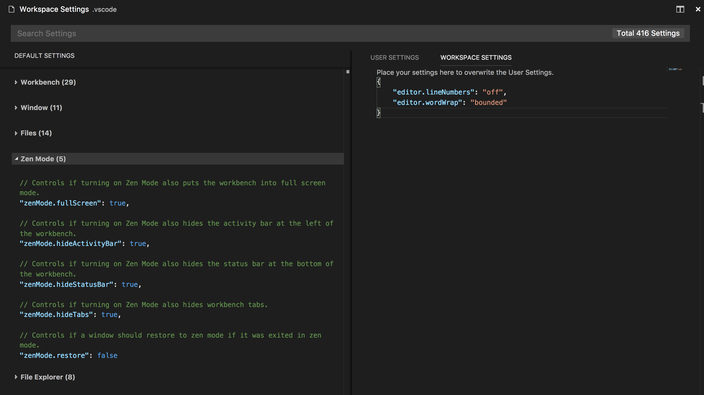

VS Codeを好みの設定で構成できます。VS Codeのエディタ、ユーザーインターフェイス、および機能的な動作のほぼすべての部分に、変更可能なオプションを用意しています
VS Codeでは設定用に2つのウィンドウを用意しました:
- ユーザー設定はVS Codeに登録され、グローバルに開いたものすべてに適用します。
- ワークスペース設定はワークスペースの
.vscodeフォルダーに登録され、ワークスペースを開いたときのみに適用します。この設定はユーザー設定よりも優先されます。
ユーザーとワークスペース設定を作成
ファイル(Code) > 基本設定 > 設定でユーザーとワークスペースの設定を構成するための項目を用意しています。既定の設定リストがあるので、これから編集したい設定をコピーしてsetting.jsonに書き込みます。右側のタブを使用すると、ユーザーとワークスペース設定ファイルをすばやく切り替えることができます。
これをコマンドパレット (⇧⌘P (Windows, Linux Ctrl+Shift+P)) からPreferences: Open User SettingsかPreferences: Open Workspace Settingsを実行することでも開くことができます。
行番号の無効化とビューポートの幅での折り返しを次の例で設定します。

変更は編集した setting.json を保存することで適用します。
Note: ワークスペースの設定は、チーム全体でプロジェクト設定を共有するのに便利です。
設定ファイルの場所
プラットホーム別ユーザー設定ファイルは次の場所にあります:
- Windows
%APPDATA%\Code\User\settings.json - Mac
$HOME/Library/Application Support/Code/User/settings.json - Linux
$HOME/.config/Code/User/settings.json
なおワークスペースの設定ファイルはプロジェクトの.vscodeフォルダーの下にあります。
既定の設定
設定を開いたとき、検索して見つけるのに役立つデフォルト設定を表示します。大きな検索バーで検索すると、条件に一致する設定を表示および強調表示します。それだけでなく一致しない検索結果も除外します。これにより、設定をすばやく簡単に見つけることが可能です。また、既定の設定とsetting.jsonエディターで設定をコピーまたは更新に役立つ操作を用意しています。

Note: VS Code拡張機能による独自設定の追加も可能で、これは既定の設定に表示されます。
設定グループ
簡単に設定に辿り着けるように、既定の設定を種類ごとに分類しています。VS Codeユーザーがよく行った設定を確認できるように、よく使用するものを一番上に配置しています。

またVS Codeに付属の既定の設定のコピーをこのページに設けています。
言語固有のエディター設定
言語設定を設定するには コマンドパレット (⇧⌘P (Windows, Linux Ctrl+Shift+P)) から Preferences: Configure language specific settings… (command id: workbench.action.configureLanguageBasedSettings) を実行します。言語を選択すると、言語エントリーを設定エディターに追記します。


もしすでに開いているファイルのファイルタイプをカスタマイズする場合、VS Codeステータスバー右の言語モードをクリックします。これにより、言語モードの選択が開きます。この中の言語から選択することで、言語エントリーを追記した設定エディターを開きます。
もちろん直接 setting.json を開くことによっても言語ベースの設定は可能です。他の設定と同じようにワークスペース設定に登録することで、ワークスペース内での適用が可能です。なおユーザーとワークスペースの両方で言語設定を定義している場合は、ワークスペースの設定を優先します。
次の例は、言語モードtypescriptとmarkdownのエディター設定をカスタマイズします。
|
設定エディターでIntelliSenseを使用すると、言語ベースの設定を見つけるのに役立ちます。 すべてのエディター設定と非エディター設定をサポートしています。
Note: 次の設定は現在サポートしませんが、次のリリースでサポートする予定です。詳細については#19511を参照してください。
|
設定とセキュリティ
VS Codeの動作に使うファイルを設定で指定できます。たとえば、統合端末が使用するシェルを選択できます。なおセキュリティーを強化するためにも、従来のようにワークスペース毎に個別で定義することはできなくなりました。
ワークスペース設定でサポートしない設定の一覧は次のとおりです:
- git.path
- terminal.integrated.shell.linux
- terminal.integrated.shellArgs.linux
- terminal.integrated.shell.osx
- terminal.integrated.shellArgs.osx
- terminal.integrated.shell.windows
- terminal.integrated.shellArgs.windows
- terminal.external.windowsExec
- terminal.external.osxExec
- terminal.external.linuxExec
これら設定のいずれかを設定したワークスペースを開くと、VS Codeは警告し、その後は常にその値を無視します。
既定の設定のコピー
次は、既定の設定とその値です。
|
よくある質問
Q: ワークスペース設定はいつ利用すべきですか?
A: カスタム設定が必要なワークスペースを使用して、他のプロジェクトに適用したくない場合です。いい例として言語固有のlintルールです。